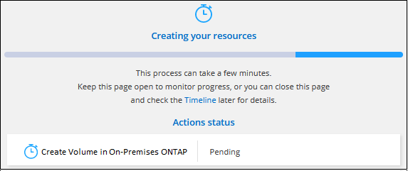

릴리스 정보
릴리스 정보
Connector로 검색된 클러스터를 관리합니다
 변경 제안
변경 제안
커넥터를 사용하여 온프레미스 ONTAP 클러스터를 검색한 경우 표준 보기에서 볼륨을 생성하고 고급 보기에서 시스템 관리자를 사용하고 BlueXP 데이터 서비스를 활성화할 수 있습니다.
Canvas에서 Connector로 검색한 클러스터의 작업 환경 아이콘은 다음과 유사합니다.

작업 환경이 직접 검색되면 작업 환경 아이콘에 "직접"이라는 단어가 포함됩니다.
표준 보기에서 FlexVol 볼륨을 생성합니다
커넥터를 사용하여 BlueXP에서 온-프레미스 ONTAP 클러스터를 발견한 후 작업 환경을 열어 FlexVol 볼륨을 프로비저닝하고 관리할 수 있습니다.
볼륨 생성
BlueXP를 사용하면 기존 애그리게이트에서 NFS 또는 CIFS 볼륨을 생성할 수 있습니다. BlueXP 표준 보기에서 사내 ONTAP 클러스터에 새 집계를 생성할 수 없습니다. 고급 보기를 사용하여 애그리게이트를 생성해야 합니다.
"템플릿"이라는 BlueXP 기능을 사용하면 데이터베이스 또는 스트리밍 서비스와 같은 특정 애플리케이션의 워크로드 요구 사항에 최적화된 볼륨을 생성할 수 있습니다. 조직에서 사용해야 하는 볼륨 템플릿을 만든 경우 를 따릅니다 수행할 수 있습니다.
-
탐색 메뉴에서 * Storage > Canvas * 를 선택합니다.
-
Canvas 페이지에서 볼륨을 프로비저닝할 온프레미스 ONTAP 클러스터를 선택합니다.
-
볼륨 > 볼륨 추가 * 를 선택합니다.
-
마법사의 단계에 따라 볼륨을 생성합니다.
-
* 세부 정보, 보호 및 태그 *: 이름과 크기 등 볼륨에 대한 세부 정보를 입력하고, 스냅샷 정책을 선택하고, 필요한 경우 볼륨 태그를 지정합니다.
이 페이지의 일부 필드는 설명이 필요 없습니다. 다음 목록에서는 지침이 필요한 필드를 설명합니다.
필드에 입력합니다 설명 크기
입력할 수 있는 최대 크기는 씬 프로비저닝의 사용 여부에 따라 크게 달라집니다. 이를 통해 현재 사용 가능한 물리적 스토리지보다 더 큰 볼륨을 생성할 수 있습니다.
스냅샷 정책
스냅샷 복사본 정책은 자동으로 생성되는 NetApp 스냅샷 복사본의 수와 빈도를 지정합니다. NetApp 스냅샷 복사본은 성능 영향이 없고 최소한의 스토리지가 필요한 시점 파일 시스템 이미지입니다. 기본 정책을 선택하거나 선택하지 않을 수 있습니다. Microsoft SQL Server의 tempdb와 같이 임시 데이터에 대해 없음을 선택할 수 있습니다.
-
* 프로토콜 *: 볼륨의 프로토콜(NFS, CIFS 또는 iSCSI)을 선택한 다음 볼륨에 대한 액세스 제어 또는 권한을 설정합니다.
CIFS를 선택하고 서버가 아직 설정되지 않은 경우 BlueXP에서 Active Directory 또는 작업 그룹을 사용하여 CIFS 서버를 설정하라는 메시지를 표시합니다.
다음 목록에서는 지침이 필요한 필드를 설명합니다.
필드에 입력합니다 설명 액세스 제어
NFS 엑스포트 정책은 볼륨에 액세스할 수 있는 서브넷의 클라이언트를 정의합니다. 기본적으로 BlueXP는 서브넷의 모든 인스턴스에 대한 액세스를 제공하는 값을 입력합니다.
권한 및 사용자/그룹
이러한 필드를 사용하면 사용자 및 그룹(액세스 제어 목록 또는 ACL라고도 함)에 대한 SMB 공유에 대한 액세스 수준을 제어할 수 있습니다. 로컬 또는 도메인 Windows 사용자 또는 그룹, UNIX 사용자 또는 그룹을 지정할 수 있습니다. 도메인 Windows 사용자 이름을 지정하는 경우 domain\username 형식을 사용하여 사용자의 도메인을 포함해야 합니다.
-
* Usage Profile *: 필요한 총 스토리지 양을 줄이기 위해 볼륨에서 스토리지 효율성 기능을 활성화 또는 비활성화할지 여부를 선택합니다.
-
* Review * (검토 *): 볼륨에 대한 세부 정보를 검토한 후 * Add * (추가 *)를 선택합니다.
-
템플릿에서 볼륨 생성
조직에서 특정 애플리케이션의 워크로드 요구사항에 최적화된 볼륨을 구축할 수 있도록 사내 ONTAP 볼륨 템플릿을 만든 경우 이 섹션의 단계를 따릅니다.
템플릿에 디스크 유형, 크기, 프로토콜, 스냅샷 정책 등과 같은 특정 볼륨 매개변수가 이미 정의되어 있기 때문에 템플릿을 사용하면 작업을 보다 쉽게 수행할 수 있습니다. 매개 변수가 이미 미리 정의된 경우 다음 볼륨 매개 변수로 건너뛸 수 있습니다.

|
템플릿을 사용하는 경우에만 NFS 또는 CIFS 볼륨을 생성할 수 있습니다. |
-
Canvas 페이지에서 볼륨을 프로비저닝할 온프레미스 ONTAP 클러스터를 선택합니다.
-
를 선택합니다
 > * 템플릿에서 볼륨 추가 *.
> * 템플릿에서 볼륨 추가 *.
-
Select Template_page에서 볼륨을 생성하는 데 사용할 템플릿을 선택하고 * Next * 를 선택합니다.

Define Parameters_page가 표시됩니다.

-
참고: * 해당 매개변수의 값을 보려면 * 읽기 전용 매개변수 표시 * 확인란을 선택하여 템플릿에 의해 잠긴 모든 필드를 표시할 수 있습니다. 기본적으로 이러한 미리 정의된 필드는 숨겨지고 완료해야 하는 필드만 표시됩니다.
-
-
context_area에서 작업 환경은 처음 시작한 작업 환경의 이름으로 채워집니다. 볼륨을 생성할 * 스토리지 VM * 및 * 애그리게이트 * 를 선택해야 합니다.
-
템플릿에서 하드 코딩되지 않은 모든 매개변수에 대한 값을 추가합니다.
-
이 볼륨에 필요한 매개 변수를 모두 정의한 후 * 템플릿 실행 * 을 선택합니다.
BlueXP는 볼륨을 프로비저닝하고 진행 상황을 볼 수 있도록 페이지를 표시합니다.

그러면 새 볼륨이 작업 환경에 추가됩니다.
또한 볼륨에 대해 BlueXP 백업 및 복구를 활성화하는 등 템플릿에 보조 작업이 구현된 경우 해당 작업도 수행됩니다.
CIFS 공유를 프로비저닝한 경우 파일 및 폴더에 대한 사용자 또는 그룹 권한을 제공하고 해당 사용자가 공유를 액세스하고 파일을 생성할 수 있는지 확인합니다.
FlexGroup 볼륨을 생성합니다
BlueXP API를 사용하여 FlexGroup 볼륨을 생성할 수 있습니다. FlexGroup 볼륨은 자동 로드 분산 기능과 함께 고성능을 제공하는 스케일아웃 볼륨입니다.
고급 보기(System Manager)를 사용하여 ONTAP 관리
사내 ONTAP 클러스터의 고급 관리가 필요한 경우에는 ONTAP 시스템과 함께 제공되는 관리 인터페이스인 ONTAP System Manager를 사용하여 이러한 작업을 수행할 수 있습니다. BlueXP에 System Manager 인터페이스를 직접 포함하므로 고급 관리를 위해 BlueXP를 떠날 필요가 없습니다.
이 고급 보기는 미리 보기로 사용할 수 있습니다. NetApp은 이 경험을 개선하고 다음 릴리즈에서 향상된 기능을 추가할 계획입니다. 제품 내 채팅을 사용하여 피드백을 보내주십시오.
피처
BlueXP의 고급 보기를 통해 다음과 같은 추가 관리 기능을 사용할 수 있습니다.
-
고급 스토리지 관리
일관성 그룹, 공유, Qtree, 할당량 및 스토리지 VM을 관리합니다.
-
네트워킹 관리
IPspace, 네트워크 인터페이스, 포트 세트 및 이더넷 포트 관리
-
이벤트 및 작업
이벤트 로그, 시스템 경고, 작업 및 감사 로그를 봅니다.
-
고급 데이터 보호
스토리지 VM, LUN 및 일관성 그룹을 보호합니다.
-
호스트 관리
SAN 이니시에이터 그룹 및 NFS 클라이언트를 설정합니다.
지원되는 구성
System Manager를 통한 고급 관리는 9.10.0 이상을 실행하는 사내 ONTAP 클러스터에서 지원됩니다.
GovCloud 지역 또는 아웃바운드 인터넷 액세스가 없는 지역에서는 System Manager 통합이 지원되지 않습니다.
고급 보기를 사용합니다
온-프레미스 ONTAP 작업 환경을 열고 고급 보기 옵션을 선택합니다.
-
Canvas 페이지에서 볼륨을 프로비저닝할 온프레미스 ONTAP 클러스터를 선택합니다.
-
오른쪽 상단에서 * 고급 보기로 전환 * 을 선택합니다.

-
확인 메시지가 나타나면 메시지를 읽고 * 닫기 * 를 선택합니다.
-
시스템 관리자를 사용하여 ONTAP를 관리합니다.
-
필요한 경우 * 표준 보기로 전환 * 을 선택하여 BlueXP를 통한 표준 관리로 돌아갑니다.

System Manager와 함께 도움을 받으십시오
ONTAP에서 System Manager를 사용하는 데 도움이 필요한 경우 을 참조하십시오 "ONTAP 설명서" 을 참조하십시오. 다음은 도움이 될 수 있는 몇 가지 링크입니다.
BlueXP 서비스를 활성화합니다
작업 환경에서 BlueXP 데이터 서비스를 활성화하여 데이터 복제, 데이터 백업, 데이터 계층화 등을 수행할 수 있습니다.
- 데이터 복제
-
Cloud Volumes ONTAP 시스템, ONTAP 파일 시스템용 Amazon FSx 및 ONTAP 클러스터 간에 데이터를 복제합니다. 클라우드 간 데이터 이동을 지원할 수 있는 일회성 데이터 복제 또는 재해 복구 또는 장기 데이터 보존에 도움이 되는 반복 일정을 선택하십시오.
- 데이터를 백업합니다
-
사내 ONTAP 시스템의 데이터를 클라우드의 저렴한 오브젝트 스토리지로 백업합니다.
- 데이터를 스캔, 매핑 및 분류합니다
-
기업 사내 클러스터를 스캔하여 데이터를 매핑 및 분류하고 개인 정보를 식별합니다. 따라서 보안 및 규정 준수 위험을 줄이고 스토리지 비용을 절감하며 데이터 마이그레이션 프로젝트를 지원할 수 있습니다.
- 데이터를 클라우드에 계층화
-
ONTAP 클러스터에서 오브젝트 스토리지로 비활성 데이터를 자동으로 계층화하여 데이터 센터를 클라우드로 확장
- 상태, 가동 시간, 성능 유지
-
운영 중단 또는 장애가 발생하기 전에 ONTAP 클러스터에 권장되는 해결 방법을 구현합니다.
- 용량이 낮은 클러스터 식별
-
낮은 용량을 보이는 클러스터를 식별하고 현재 및 예상 용량에 대한 클러스터를 검토합니다.